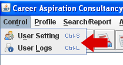

CONTROL MENU
This Control Menu contains:
1. User Settings 2. User Logs.

User Settings:-
Here a new user can register himself, by typing the username and the password. And so, each user is authenticated with some menus, as not all the users can have permission to access all the manipulations in the candidate,company,jobs profile which is also same to reports section. We have used new button for a new user to register. And an existing user can be searched by typing his name and hence we can view all the authentications he is provided. And save button is used to save the new register into database. If required the user manipulations can also be updated, and if not reuired we can delete it too.
User Logs:-
Here we can get the details of the user who ever has accessed , as per his name. By entering the name user logs provides us with the login date and log in time as well as log out date and log out time, which is the safe way of keeping the database secure. And if interested we can take the print of it by clicking on report and later on print preview.